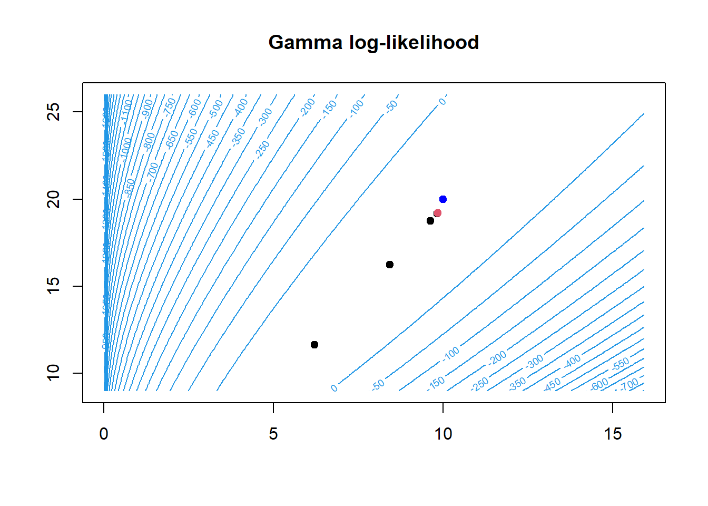

n <- 100
alpha_true <- 10
beta_true <- 20
set.seed(36)
y <- rgamma(n, alpha_true, rate=beta_true)
# max
R <- 1000
alpha_mle <- numeric(R)
beta_mle <- numeric(R)
H <- function(a, b, y){
n <- length(y)
H <- matrix(NA, 2, 2)
H[1,1] <- -n*trigamma(a)
H[1,2] <- n/b
H[2,1] <- n/b
H[2,2] <- -n*a/(b^2)
return(H)
}
grad <- function(a, b, y){
n <- length(y)
grad <- numeric(2)
grad[1] <- n*log(b) - n*digamma(a) + sum(log(y))
grad[2] <- n*a/b - sum(y)
return(grad)
}
# Method of moments:
alpha_mle[1] <- (mean(y)^2)/(mean(y^2)-(mean(y)^2))
beta_mle[1] <- mean(y)/(mean(y^2)-(mean(y)^2))
alpha_mle[1][1] 9.686738beta_mle[1][1] 18.90184alpha_mle[1] <-1
beta_mle[1] <- 1
condition <- T
r <- 1
eps <- 0.0001
while(condition){
r <- r + 1
theta_new <- c(alpha_mle[r-1], beta_mle[r-1]) -
solve(H(alpha_mle[r-1], beta_mle[r-1], y)) %*%
grad(alpha_mle[r-1], beta_mle[r-1], y)
alpha_mle[r] <- theta_new[1]
beta_mle[r] <- theta_new[2]
dist_param <- sqrt(((alpha_mle[r] - alpha_mle[r-1])^2 + (beta_mle[r] - beta_mle[r-1])^2))
condition <- !(dist_param < eps &
sum(abs(grad(alpha_mle[r], beta_mle[r], y))) < eps) &
r < R
}
r[1] 10alpha_mle <- alpha_mle[1:r]
beta_mle <- beta_mle[1:r]
res <- matrix(NA, ncol=4, nrow=r)
for(i in 1:r){
res[i,1] <- alpha_mle[i]
res[i,2] <- beta_mle[i]
res[i,3] <- grad(alpha_mle[i], beta_mle[i], y)[1]
res[i,4] <- grad(alpha_mle[i], beta_mle[i], y)[2]
}
colnames(res) <- c("alpha_mle","beta_mle", "grad_1", "grad_2")
res alpha_mle beta_mle grad_1 grad_2
[1,] 1.000000 1.000000 -1.429903e+01 4.875240e+01
[2,] 1.534215 2.021739 -8.424641e+00 2.463831e+01
[3,] 2.475422 3.918440 -4.554494e+00 1.192605e+01
[4,] 4.027957 7.115740 -2.191833e+00 5.358704e+00
[5,] 6.210097 11.644300 -8.896358e-01 2.084043e+00
[6,] 8.419940 16.242911 -2.595443e-01 5.900236e-01
[7,] 9.618497 18.739927 -3.546169e-02 7.861816e-02
[8,] 9.829020 19.178799 -8.307029e-04 1.799031e-03
[9,] 9.834028 19.189244 -4.623602e-07 9.792636e-07
[10,] 9.834031 19.189250 -5.684342e-14 2.913225e-13alpha_grid <- seq(0.01, 16, 0.1)
beta_grid <- seq(0.01, 26, 0.1)
beta_grid <- seq(9, 26, 0.1)
theta <- expand.grid(alpha=alpha_grid, beta=beta_grid)
# Calcola la funzione obiettivo in corrispondenza di ogni riga della griglia:
llik <- apply(theta,1,function(x) sum(log(dgamma(y,as.numeric(x[1]), rate=as.numeric(x[2])))))
# Cambio le dimensioni dell'oggetto contenente i valori della funzione target:
dim(llik) <- c(length(alpha_grid),length(beta_grid))
contour(x=unique(alpha_grid), y=unique(beta_grid),z=llik,
nlevels = 30,
col=4,main="Gamma log-likelihood")
points(alpha_mle, beta_mle, pch=19, col=1)
points(alpha_mle[r], beta_mle[r], pch=19, col=2)
points(alpha_true, beta_true, pch=19, col="blue")